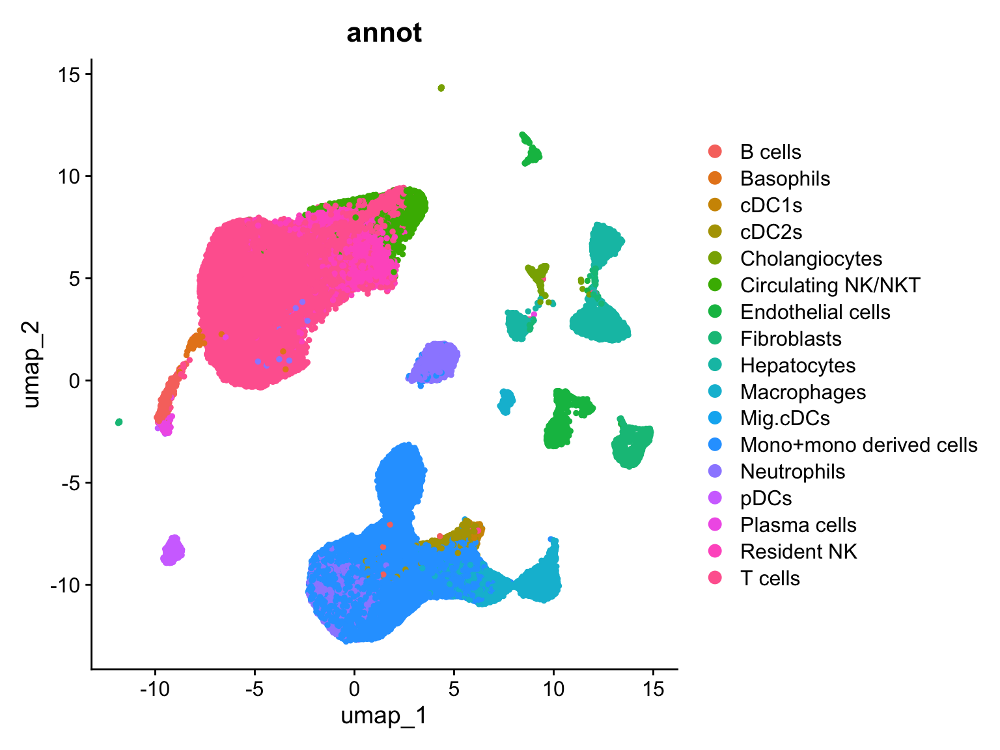
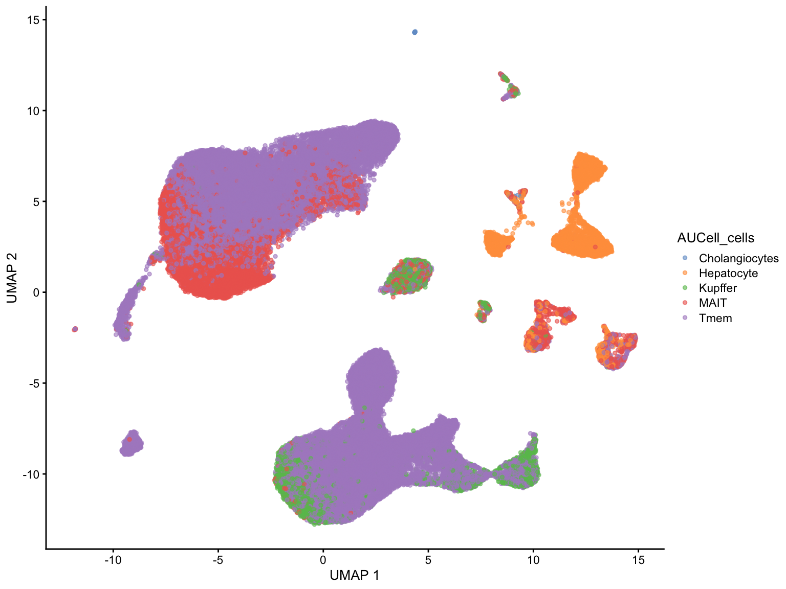

Code
library(SingleCellExperiment)
library(AUCell)
library(tidyverse)
library(scater)
library(uwot)
library(GSEABase)
library(Seurat)
library(readxl)The dataset is consisting of Liver CD45+ and CD45- cells derived from healthy and obese humans described in Guilliams M, Bonnardel J, Haest B, Vanderborght B et al. Spatial proteogenomics reveals distinct and evolutionarily conserved hepatic macrophage niches. Cell 2022.
GSE192740_seuratObj_humanRNAseq.rds.gz file was downloaded, further processed with the Seurat workflow in R and saved as an intermediate .rds file containing native cell annotation, clustering and dim reductions.
Here we apply AUCell package from Bioconductor library in order to find MAIT cells within natively annotated T cells together with other cell types. We are also specifically interested in hepatocytes.
library(SingleCellExperiment)
library(AUCell)
library(tidyverse)
library(scater)
library(uwot)
library(GSEABase)
library(Seurat)
library(readxl)We can see many cell types annotated by authors in original publication
Gil.seurat <- readRDS("./../input/Gil_analyzed.rds")
Gil.seuratAn object of class Seurat
28871 features across 78748 samples within 1 assay
Active assay: RNA (28871 features, 2000 variable features)
3 layers present: counts, data, scale.data
2 dimensional reductions calculated: pca, umapDimPlot(Gil.seurat, reduction = "umap", group.by = "annot", pt.size = 1.0)
We remove parent objects to save RAM memory for further operations
sce_obj <- as.SingleCellExperiment(Gil.seurat)
Gil.sce <- sce_obj
rm(Gil.seurat)
rm(sce_obj)MAIT markers were taken from this paper and the rest of the markers were taken from PanglaoDB database
genes <-read_excel("./../input/CellMarkerMAITcells.xlsx", sheet = 2, col_names = TRUE) ## Garner and Pangao cell markers listall.sets <- lapply(names(genes), function(x) {
GeneSet(genes[[x]], setName=x)
})
all.sets <- GeneSetCollection(all.sets)rankings <- AUCell_buildRankings(counts(Gil.sce),
plotStats=FALSE, verbose=FALSE)
### Calculate AUC curves for each cell taking our markers
cell.aucs <- AUCell_calcAUC(all.sets, rankings)Genes in the gene sets NOT available in the dataset:
MAIT: 3 (7% of 43)
Tmem: 3 (7% of 43)
Hepatocyte: 2 (5% of 43)
Cholangiocytes: 2 (5% of 43)
Kupffer: 3 (7% of 43)results <- t(assay(cell.aucs))new.labels <- colnames(results)[max.col(results)]
tab <- table(new.labels, Gil.sce$annot)
tab
new.labels B cells Basophils cDC1s cDC2s Cholangiocytes
Cholangiocytes 0 0 0 0 102
Hepatocyte 0 1 0 0 137
Kupffer 0 15 0 0 1
MAIT 3 54 0 0 184
Tmem 753 101 229 891 6
new.labels Circulating NK/NKT Endothelial cells Fibroblasts Hepatocytes
Cholangiocytes 0 3 4 0
Hepatocyte 0 281 295 3795
Kupffer 0 161 4 1
MAIT 13 1274 508 39
Tmem 3469 249 293 5
new.labels Macrophages Mig.cDCs Mono+mono derived cells Neutrophils pDCs
Cholangiocytes 0 0 0 10 0
Hepatocyte 34 0 1 16 2
Kupffer 1615 0 1704 2237 3
MAIT 121 0 134 961 2
Tmem 1475 18 16162 1614 814
new.labels Plasma cells Resident NK T cells
Cholangiocytes 0 0 1
Hepatocyte 2 1 5
Kupffer 4 0 9
MAIT 11 876 12464
Tmem 199 2281 23101We can see that many other cell types got mislabeled as MAIT and Tmem cells. This may be due to the batch effect between reference datasets and current data
new_labels_df <- DataFrame(new.labels)
# Now assign the DataFrame to colData
colData(Gil.sce) <- new_labels_df
Gil.sce$AUCell_cells <- Gil.sce$new.labelsplotUMAP(Gil.sce, colour_by = "AUCell_cells", point_size = 1.0)
Comparing the native cell annotations and new annotations I see a few major problems here. First, T mem cell get spilled over to those previously labeled as Mono-derived and NK cells. Next MAIT cells get imposed on a subset of those previously labeled as circulating NKT/NK cells and some others. Hepatocytes seem to be roughly labeled similarly as in original analysis.
So further analysis is needed to refine these results. Perhaps, one would need to cross-check between gene markers sets we chose and the sets derived from other databases, especially dedicated to immune cells.
sessionInfo()R version 4.3.3 (2024-02-29)
Platform: aarch64-apple-darwin20 (64-bit)
Running under: macOS Sonoma 14.5
Matrix products: default
BLAS: /Library/Frameworks/R.framework/Versions/4.3-arm64/Resources/lib/libRblas.0.dylib
LAPACK: /Library/Frameworks/R.framework/Versions/4.3-arm64/Resources/lib/libRlapack.dylib; LAPACK version 3.11.0
locale:
[1] en_US.UTF-8/en_US.UTF-8/en_US.UTF-8/C/en_US.UTF-8/en_US.UTF-8
time zone: Europe/Zurich
tzcode source: internal
attached base packages:
[1] stats4 stats graphics grDevices utils datasets methods
[8] base
other attached packages:
[1] readxl_1.4.3 Seurat_5.0.3
[3] SeuratObject_5.0.1 sp_2.1-3
[5] GSEABase_1.64.0 graph_1.80.0
[7] annotate_1.80.0 XML_3.99-0.16.1
[9] AnnotationDbi_1.64.1 uwot_0.1.16
[11] Matrix_1.6-5 scater_1.30.1
[13] scuttle_1.12.0 lubridate_1.9.3
[15] forcats_1.0.0 stringr_1.5.1
[17] dplyr_1.1.4 purrr_1.0.2
[19] readr_2.1.5 tidyr_1.3.1
[21] tibble_3.2.1 ggplot2_3.5.0
[23] tidyverse_2.0.0 AUCell_1.24.0
[25] SingleCellExperiment_1.24.0 SummarizedExperiment_1.32.0
[27] Biobase_2.62.0 GenomicRanges_1.54.1
[29] GenomeInfoDb_1.38.8 IRanges_2.36.0
[31] S4Vectors_0.40.2 BiocGenerics_0.48.1
[33] MatrixGenerics_1.14.0 matrixStats_1.2.0
loaded via a namespace (and not attached):
[1] RcppAnnoy_0.0.22 splines_4.3.3
[3] later_1.3.2 bitops_1.0-7
[5] cellranger_1.1.0 R.oo_1.26.0
[7] polyclip_1.10-6 fastDummies_1.7.3
[9] lifecycle_1.0.4 globals_0.16.3
[11] lattice_0.22-6 MASS_7.3-60.0.1
[13] magrittr_2.0.3 plotly_4.10.4
[15] rmarkdown_2.26 yaml_2.3.8
[17] httpuv_1.6.15 sctransform_0.4.1
[19] spam_2.10-0 spatstat.sparse_3.0-3
[21] reticulate_1.35.0 cowplot_1.1.3
[23] pbapply_1.7-2 DBI_1.2.2
[25] RColorBrewer_1.1-3 abind_1.4-5
[27] zlibbioc_1.48.2 Rtsne_0.17
[29] R.utils_2.12.3 RCurl_1.98-1.14
[31] GenomeInfoDbData_1.2.11 ggrepel_0.9.5
[33] irlba_2.3.5.1 spatstat.utils_3.0-4
[35] listenv_0.9.1 goftest_1.2-3
[37] RSpectra_0.16-1 spatstat.random_3.2-3
[39] fitdistrplus_1.1-11 parallelly_1.37.1
[41] DelayedMatrixStats_1.24.0 leiden_0.4.3.1
[43] codetools_0.2-20 DelayedArray_0.28.0
[45] tidyselect_1.2.1 farver_2.1.1
[47] ScaledMatrix_1.10.0 viridis_0.6.5
[49] spatstat.explore_3.2-7 jsonlite_1.8.8
[51] BiocNeighbors_1.20.2 progressr_0.14.0
[53] ggridges_0.5.6 survival_3.5-8
[55] tools_4.3.3 ica_1.0-3
[57] Rcpp_1.0.12 glue_1.7.0
[59] gridExtra_2.3 SparseArray_1.2.4
[61] xfun_0.43 withr_3.0.0
[63] fastmap_1.1.1 fansi_1.0.6
[65] digest_0.6.35 rsvd_1.0.5
[67] timechange_0.3.0 R6_2.5.1
[69] mime_0.12 colorspace_2.1-0
[71] scattermore_1.2 tensor_1.5
[73] spatstat.data_3.0-4 RSQLite_2.3.6
[75] R.methodsS3_1.8.2 utf8_1.2.4
[77] generics_0.1.3 data.table_1.15.4
[79] httr_1.4.7 htmlwidgets_1.6.4
[81] S4Arrays_1.2.1 pkgconfig_2.0.3
[83] gtable_0.3.4 blob_1.2.4
[85] lmtest_0.9-40 XVector_0.42.0
[87] htmltools_0.5.8.1 dotCall64_1.1-1
[89] scales_1.3.0 png_0.1-8
[91] knitr_1.45 rstudioapi_0.16.0
[93] reshape2_1.4.4 tzdb_0.4.0
[95] nlme_3.1-164 cachem_1.0.8
[97] zoo_1.8-12 KernSmooth_2.23-22
[99] parallel_4.3.3 miniUI_0.1.1.1
[101] vipor_0.4.7 pillar_1.9.0
[103] grid_4.3.3 vctrs_0.6.5
[105] RANN_2.6.1 promises_1.2.1
[107] BiocSingular_1.18.0 beachmat_2.18.1
[109] xtable_1.8-4 cluster_2.1.6
[111] beeswarm_0.4.0 evaluate_0.23
[113] cli_3.6.2 compiler_4.3.3
[115] rlang_1.1.3 crayon_1.5.2
[117] future.apply_1.11.2 labeling_0.4.3
[119] plyr_1.8.9 ggbeeswarm_0.7.2
[121] stringi_1.8.3 deldir_2.0-4
[123] viridisLite_0.4.2 BiocParallel_1.36.0
[125] munsell_0.5.1 Biostrings_2.70.3
[127] lazyeval_0.2.2 spatstat.geom_3.2-9
[129] RcppHNSW_0.6.0 hms_1.1.3
[131] patchwork_1.2.0 sparseMatrixStats_1.14.0
[133] bit64_4.0.5 future_1.33.2
[135] KEGGREST_1.42.0 shiny_1.8.1.1
[137] ROCR_1.0-11 igraph_2.0.3
[139] memoise_2.0.1 bit_4.0.5